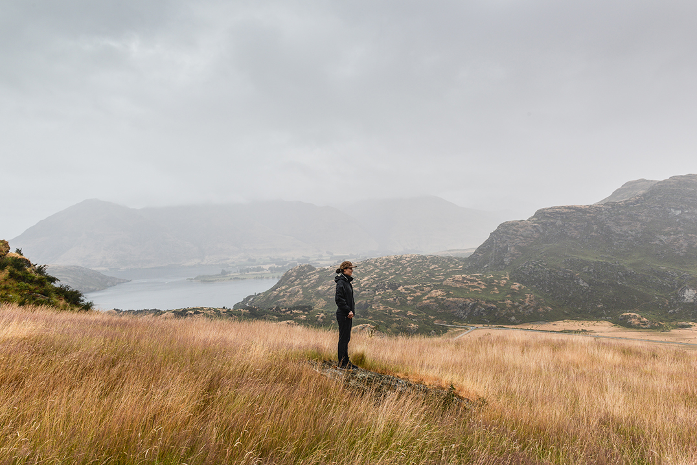

Features - The Boweress
Textural terrain
19 April, 2018
We arrive in the ski capital of Queenstown. From early on you know this place is going to be epic. The fact that you fly between mountains as large as the French alps (which btw cancel out any night time flights due to the radar not being able to get through the sheer size of them) says it all.
Flying into Queenstown you’d be forgiven thinking you were in the thick of the French alps. Snow still fresh on the peaks, we dive straight between the mountanous valleys, crazy isolated! The air is next level fresh, that kind of fresh that almost hurts, your Sydney musty lungs are now slowly adjusting to.
Upon landing we jump straight into a rental car and hit the road. Luckily my boyfriend is super organised and has the whole trip planned down to a minute. Travel day, activity day, travel day, activity day…
The first thing you’ll notice about Queenstown is the water. It’s so clear you can literally see the pebbles on the floor for as far as the eye can reach. This made me feel an immediate sense of relaxation, I am a scorpio (water sign) afterall.
Waking up in Queenstown you really begin to understand the tagline of it being an adventure capital , a place for thrill seekers… the sound of speed boats, jet skis and laughing stream in through the windows. The Hilton Double Tree is a really nice spot as it’s just that little bit out of Queenstown if adrenalin living and breathing is not your bag 100% of the time. It’s right on the lake in a secluded type of village that’s easily accessible to car rentals, the incredibles snow fields and the airport.
We are here in Summer and I can tell you now this town is not just a winter destination. It’s a place that has a vibe and a lot going on no matter what the season. The village is what you’d imagine Aspen to be like. The classic wood lodge feel yet on the most pristine lakes you’ve ever seen. The fresh air is next level and really adds to the feeling that you are only a few hours form Sydney yet seem worlds apart. The hospitality from pretty much everyone is awesome as there’s an overriding feeling that everyone is there to have a good time. Finding a kiwi might prove difficult as it seems to be a town of tourists who came on a holiday and decided to never leave.
We soon realise that the beauty of Queenstown lies in it’s close proximity to more awesome destinations, blue pools and the drive to Milford sound being standouts! New Zealand’s South Island forces you to be a cliche and take the road less travelled.
